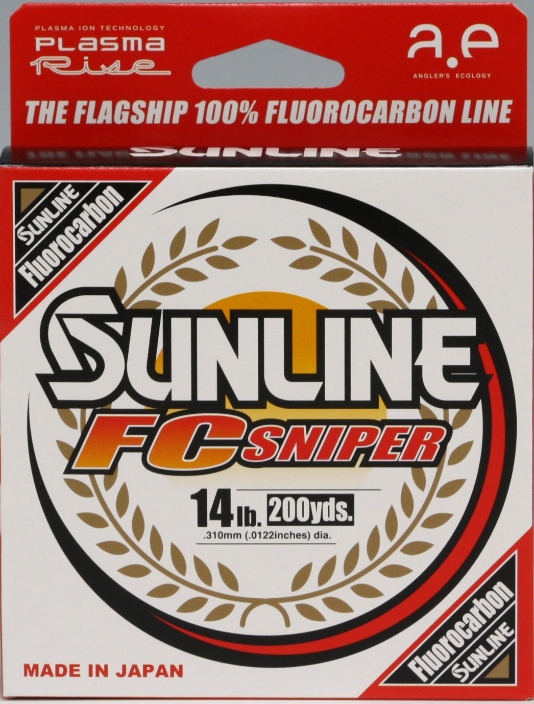
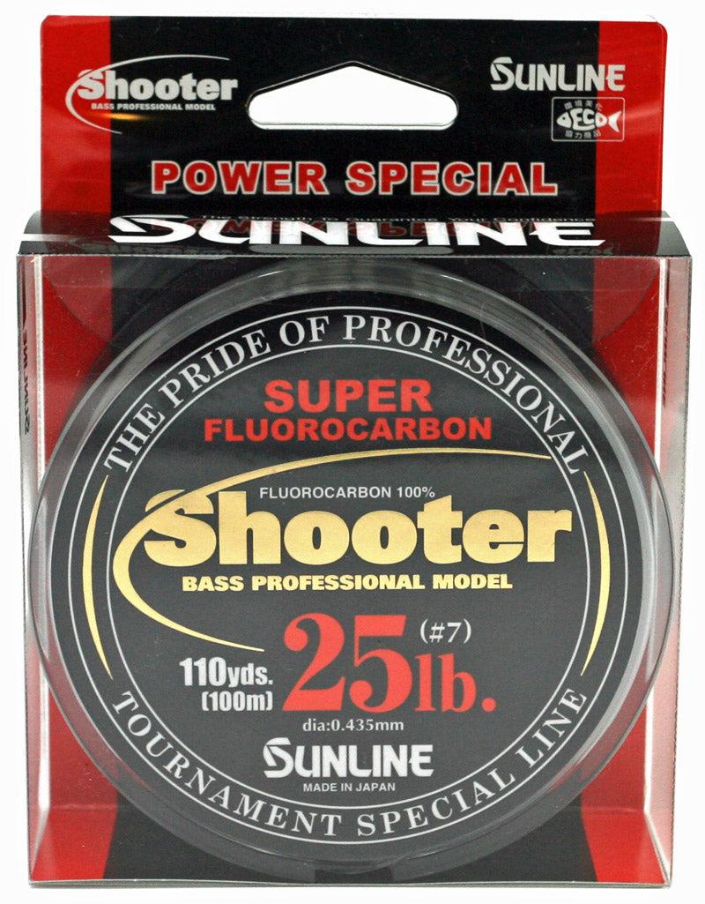
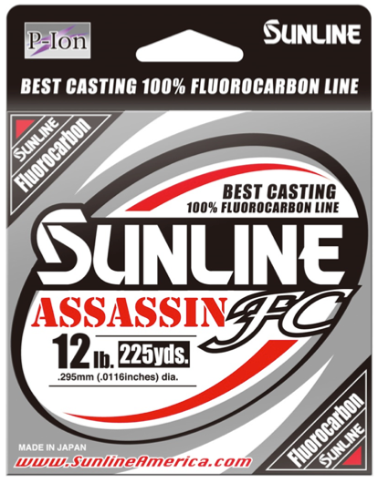
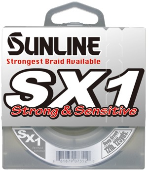
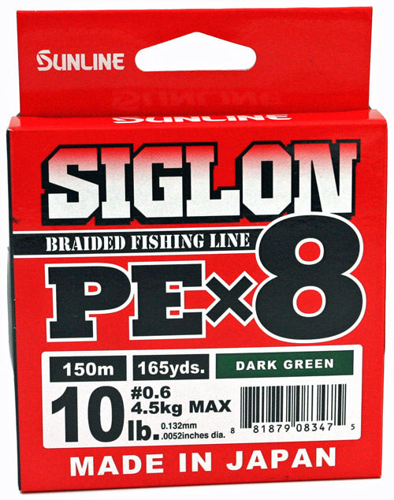
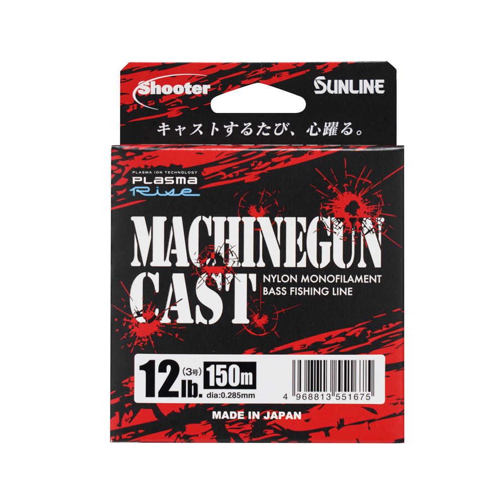
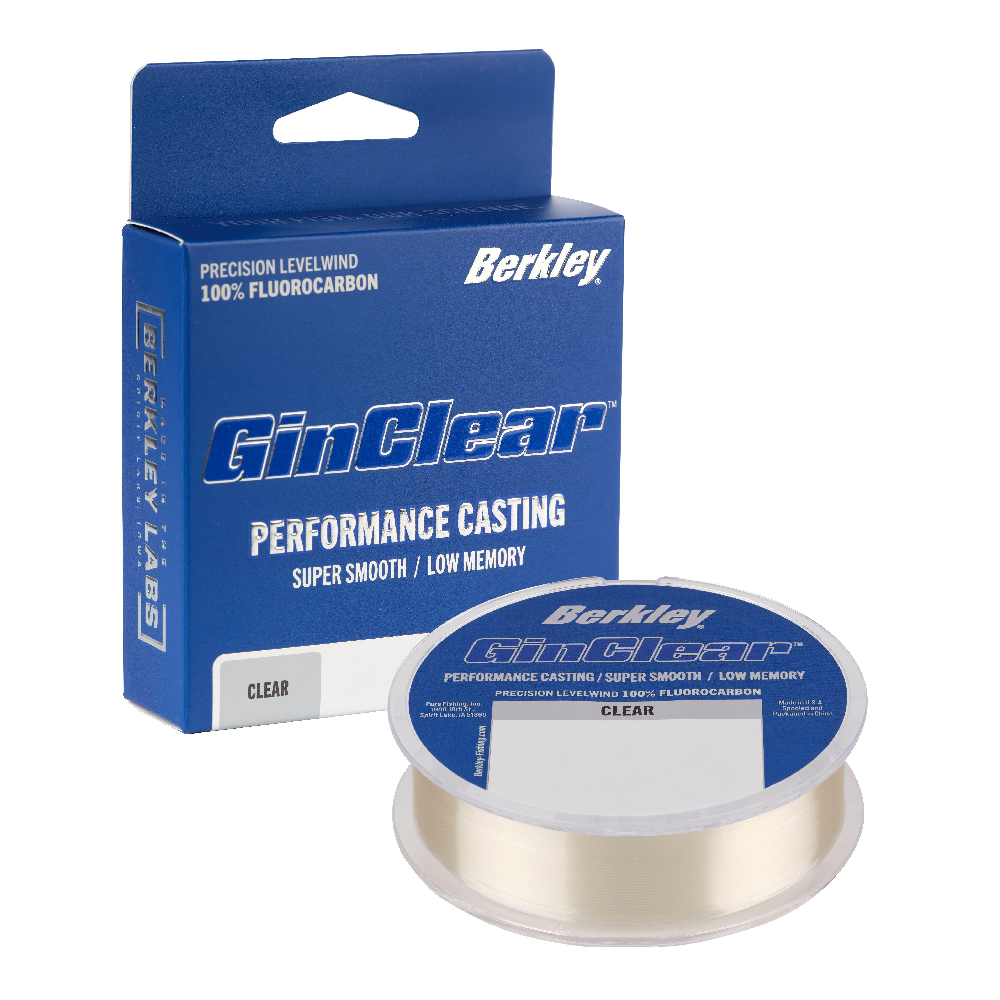

Ten New Line Guides
Review batch: nine Sunline models and Berkley GINCLEAR. These ten are not published on ReelCalc yet.

Sunline FC Sniper Fluorocarbon
100% fluorocarbon; triple-resin processing
Review page Squarespace layout preview
Sunline Shooter Fluorocarbon
100% fluorocarbon; size-specific Shooter formulations
Review page Squarespace layout preview
Sunline Assassin FC Fluorocarbon
100% fluorocarbon; P-Ion surface processing
Review page Squarespace layout preview


Sunline Xplasma Asegai Braid
8-strand PE braid; Xplasma treatment
Review page Squarespace layout preview

Sunline Machinegun Cast Monofilament
Nylon monofilament; current Plasma Rise version
Review page Squarespace layout preview
Sunline BMS Azayaka FC Fluorocarbon
100% fluorocarbon; colored Bite Marker System
Review page Squarespace layout preview
Berkley GINCLEAR Fluorocarbon
100% fluorocarbon; level-wound retail spool
Review page Squarespace layout preview